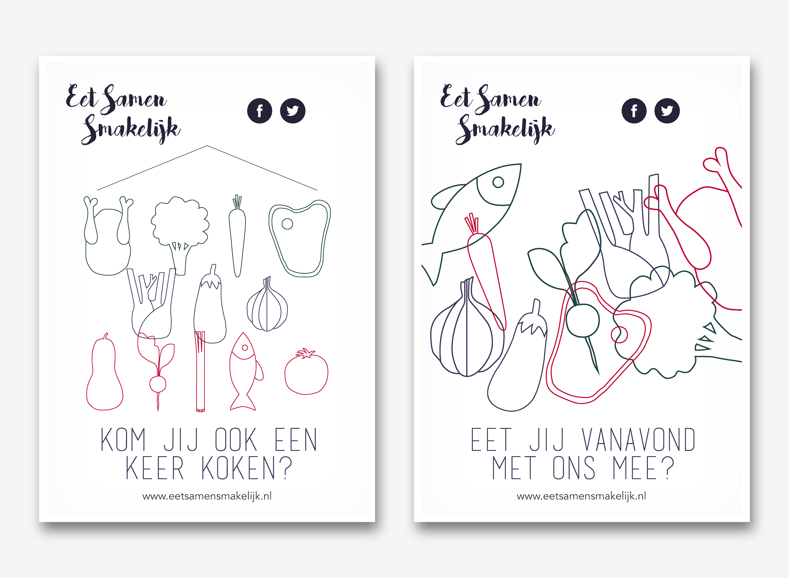

Stedenproject
December 2015
Het stedenproject is de eerste opdracht van het vierde jaar op het Mediacollege. Het doel was een fictieve stichting te op te richten, die de bewoners van de stad Den Haag samen brengt.
Eten doet samenkomen
Na mijn onderzoek kwam ik tot de conclusie dat er veel mensen van verschillende culturen in Den Haag wonen. In de stad Den Haag zijn er zo ongeveer 130 verschillende nationaliteiten. Het idee voor dit project was een buurtkantine op te richten, waar iedereen in de buurt gebruik van mag maken. Het doel hiervan is mensen van verschillende culturen samen te brengen door middel van eten. In de meeste culturen speelt voedsel een enorm grote rol.